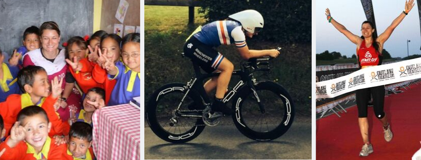

About
I'm an experienced IT professional with a Computing BSc and 18 years experience working in the IT industry, in the UK and abroad. Most of my time has been spent performing Business Analysis but I've also stepped into associated roles including Development Manager, Programme Manager and Architect.
My favourite part of the roles I've done over the years is helping businesses and software development teams to get valuable insights from data, and I'm now changing the course of my career to focus on Data Science.
I'm currently completing a Data Science MSc at Manchester Metropolitan University.
Timeline and Skills
Outside of Work
When I'm not at work/uni, I enjoy analysing open data for fun, running, cycling, swimming and sewing. I love learning new things and challenging myself.
In the past I've:
Taught English as a volunteer in a small village in India
Completed triathlons including the Outlaw ironman (2.4 mile swim, 112 mile bike ride, 26.2 mile run)
Completed bike races (track, road and MTB) and gained the club record for the women's 12 hour time trial in 2014
Been the Membership Secretary for Manchester Wheelers cycling club, focussing on increasing the % of women in the club using various methods including this video
Set up and run an online store to raise money for charity
